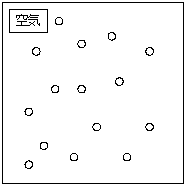
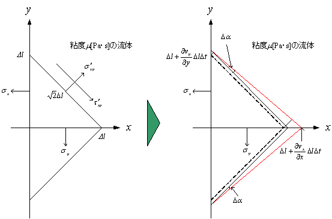

・流体力学
流体力学とは、水や空気などが流れる現象を力学的に解析する学問である。具体的には流体に作用する力を式で表し、収支を取ることから始まる。プログラム化すれば、パソコンの画面上に流れを再現することができる。
・流体
流体とは水や空気などの流れる物質のことを言う。流体力学は流体を対象にしている。流体を考える最小単位を流体粒子と呼ぶ。これは、分子オーダーよりも大きい。
・流体の物性
流体力学には次の様な物性が影響する。
密度r[kg/m3]
単位体積当りの質量。流体の温度や濃度などによって変化する。
水 : 998.2[kg/m3]
空気: 1.189[kg/m3] (20[℃]、1×105[Pa])
液体の方が気体の密度よりも大きいことがわかる。下記はイメージ。

粘度m[Pa・s]
流体の粘り気を表している。流体の温度や濃度によって変化する。
水 : 1,006×10-6[Pa・s]
空気: 18.2×10-6[Pa・s] (20[℃]、1×105[Pa])
液体の方が気体の粘度よりも大きいことがわかる。粘度は、流体粒子間の摩擦係数を表している。大きい程、摩擦による運動量の交換が多くなる。
表面張力g [N/m]
表面張力の大きさを表している。流体の温度や濃度によって変化する。
水: 72.59×10-3[N/m]
・流体使用する収支式
流体力学では、2つの収支式を扱う。収支式とは、微小な変化量の釣り合いを表す微分方程式である。導出は微小領域の釣り合いを考える。
・質量収支式 質量[kg]の釣り合い式
・運動量収支式 力[N]の釣り合い式。ナビエ・ストークス式と言われる。
・質量収支式
下図の様な微小領域に流入・流出する質量の収支を取る。
Fi[kg/s]は質量流量で次式となる。
x軸方向
y軸方向
z軸方向
収支式は、次式となる。
両辺をDxDyDzで割って、
Dt, Dx, Dy, Dz → 0とすると
右辺を展開すると
ベクトル表示すると
ここで、D/Dtは全微分作用素で
・流体に働く力
・粘性力の簡単な説明
流体には粘性力という力が働く。これは流体粒子間に働く摩擦力である。下図の様に粘性力によって、ある方向に流れている流体粒子の周囲の粒子がつられて同じ方向に流れ出す。

上図の場合、2つの流体粒子間に作用している応力t [N/m2]は、粘度をm [Pa・s]とすると次式となる。
これはニュートンの粘性の法則と呼ばれる。単位面積当たりに働く粘性力を剪断応力と言う。
・力の種類
流体に働く力は、応力[N/m2]と体積力[N/m3]に分けられる。
応力[N/m2]は、単位面積当りに作用する力で流体粒子の表面に作用する。
慣性力、粘性力、圧力、表面張力 等
がある。
体積力[N/m3]は、単位体積当りに作用する力で流体粒子全体に作用する。
重力や燃焼・化学反応などによる体積膨張・発熱 等
がある。
・収支式の導出
下図の様な微小領域に作用する応力、体積力の収支を取ることで、運動量収支式が導出される。
・運動量収支式
流体粒子に作用する力の収支を取り、運動量収支式を導出する。
・慣性力
x軸方向の流入・流出による慣性力をそれぞれF|x[N], F|x+Dx[N]、i軸方向の質量流量をwi, [kg/s]とすると、慣性力は下記で表される。
ここで、
これは流入した質量による押す力を現している。同様に、流出側の質量は、次の様になる。
y軸方向の慣性力は、次の様になる。
z軸方向の慣性力は、次の様になる。
・粘性力
剪断応力はテンソルである。つまり、x, y, z軸に垂直な面にそれぞれ働き、各応力はx, y, z成分に分けられる。i軸に垂直な面に作用する剪断応力のj成分は、tij[N/m2]で表される。
x軸方向の流入・流出による粘性力をそれぞれF|x[N], F|x+Dx[N]とすると、次式で表される。
上式は、x, y, z軸に垂直な面にそれぞれ作用している応力のx成分を考慮している。
y成分は、次の様になる。
z成分は、次の様になる。
・圧力
圧力p[N/m2]は、面に対して法線方向に働く応力である。x, y, z軸に垂直な面にそれぞれ法線方向に作用する。
x軸方向の流入・流出による圧力をそれぞれF|x[N], F|x+Dx[N]とすると、次の様に表される。
y成分は、次の様になる。
z成分は、次の様になる。
・重力
重力[m/s2]は加速度である。
また、単位質量当たりの力を表している。
x, y, z軸方向の力Fx[N], Fy[N], Fz[N]は、それぞれ次の様になる。
これらは、体積力を表している。
・運動量収支式の導出
運動量収支式は、流体粒子に作用する力の収支を取ることで導出される。x成分の収支は次式となる。
重力 圧力 粘性力 慣性力
DxDyDzで割ると
Dt, Dx, Dy, Dz→0とすると
質量収支式より
と展開できる。詳細は、別に記述している。
y, z成分も同様に導出される。
ベクトル表示は、次式で表される。
ここで、全微分表示作用素
を用いると、次式で表される。
また、応力を1つの項で表すと次式となる。

ここで、[N/m2]は応力テンソルで、
・応力の詳細
応力テンソルは、圧力と剪断応力で表される。その成分を導出する。
・剪断速度について
剪断速度を直線運動から導出する。

上図を用いて剪断速度g[1/s]は、次式で表せる。
剪断速度は、距離に対する速度勾配なので、単位は次の様に解釈できる。
次に剪断速度を回転運動から導出する。この場合は角速度を用いる。
面積の収支から
剪断速度g[1/s]は
・応力の導出
・応力の垂直成分
応力テンソルの垂直応力成分を導出する。下図から応力の収支を考える。

Dt経過後の角度Daは次式となる。
剪断速度g[m/s]は、次式となる。
従って、剪断応力t ’xy[N/m2]は次式となる。
また、応力の釣り合いから
より
なので、
同様に
sx, sy, szは垂直応力なので次式で表される。
従って、
・応力の剪断成分の対称性
応力テンソルの剪断応力成分を導出する。下図の様な回転運動からトルク[Nm]の収支を考える。
上図の様にxy平面の中心に慣性モーメントIz[Nm/s]の軸を取り、角速度をw[rad/s]とする。剪断応力とのトルク[Nm]の収支は次式で与えられる。
よって、
ここで、慣性モーメントは、
となるので、トルクの収支式に代入すると次式となる。
従って、
Dx, Dy → 0とすると
従って、
同様に
・応力の剪断成分の値
下図より剪断速度を導出する。
Da[rad]は次式となる。
また、Db[rad]は次式となる。
従って、xy面の剪断速度gz [m/s]は次式となる。
同様に、yz面, zx面の剪断速度gy, gz[m/s]は次式となる。
従って、
・応力のまとめ
まとめると次の様になる。
x軸に垂直な面に作用する剪断応力の成分
y軸に垂直な面に作用する剪断応力の成分
z軸に垂直な面に作用する剪断応力の成分
一般的に次の様に表される。
また、
・圧力について
上記で述べている圧力px, py, pz[N/m2]は、動力学的圧力である。熱力学的な平衡圧力p[N/m2]を用いて次式で表される。
ここで、m’[kg/m・s]は体積粘性係数である。m’=0として
とする場合もある。
・運動量収支式の詳細
・境界に働く力
・表面張力
下図の様な異なる相の界面には、表面張力が作用する。この力は、気液界面に限らず、液液界面や固液界面にも作用する。
表面張力をDp[N/m2]、曲率半径をR[m]、表面張力係数をg[N/m]とすると次式が成り立つ。
これは、ラプラス(Laplace)の式と呼ばれている。次の様に導出される。
上図は、微小曲面に作用する表面張力の釣り合いを表している。r1[m], r2[m]は曲率半径である。下図に詳細を示す。
中心方向の力をDF1[N/m2]とすると
同様に
従って、表面張力による圧力差DP[N/m2]は次式となる。
曲面が球面の場合は、次式となる。
・壁面の速度
下図の様に壁面の速度は0になる。
・蒸発
蒸発速度rw(T)[kg/s]
質量収支 界面の節点
・無次元数
無次元数は、ある系に作用する力[N]の釣り合いを示している。系の現象は、力の大きさではなく、力の釣り合いで決まる。例えば、系1と系2の無次元数が等しい場合、系の大きさや作用する力が異なっても同じ現象が現れる。系に作用する力を次式で表す。
ここで、x[m]は代表長さ、v[m/s]は代表速度である。
これらの力の釣り合いを示す無次元数は次式となる。
レイノルズ数
慣性力と粘性力の釣り合いを示す無次元数。
Re数の大小で、流れは層流、乱流に分けられる。
Re < 4000 層流
Re >
ウェーバー数
慣性力と表面張力の釣り合いを表す無次元数。
オーネソルジュ数
粘性力、表面張力、慣性力の釣り合いを表す無次元数
オーネソルジュ数には、代表速度が含まれていない。数値解析で初速が0の場合に使用されることがある。
ボンド数
重力、表面張力の釣り合いを表す無次元数
フルード数
慣性力、重力の釣り合いを表す無次元数
次に、音速との比に関する無次元数を示す。
マッハ数
ここで、a[m/s]は流体の音速である。これは、圧縮性流体を扱う場合に使用する。
上記の無次元数以外にも熱収支式、物質収支式などで使用される無次元数がある。
・無次元化
無次元化とは、収支式に使用されている変数の次元を無次元[-]にする操作である。無次元化することで収支式の定数は無次元数のみとなる。逆に言えば、ある無次元数で計算された結果は、その無次元数の変数をどのようにとっても変わらない。速度や長さ、密度などが異なっても無次元数が等しければ同じ現象が現れる。変数は次式で無次元化される。ここで、x0[m]は代表長さ、v0[m/s]は代表速度である。
座標の無次元化
速度の無次元化
圧力の無次元化
時間の無次元化
・質量収支式の無次元化
無次元化前
無次元化後
上記の無次元化には、音速式が用いられている。c[m/s]は音速である。
・運動量収支式の無次元化
無次元化前

ここで、[N/m2]は応力テンソルで、
無次元化後
ここで、*は応力テンソルで、
・代表速度、代表長さの取り方
ある現象を解析する場合を考える。その際、代表速度、代表長さの取り方により無次元数は異なるため、数値解析の結果も異なる。しかし、どの解析結果でも速度、時間、距離を有次元に戻せば同じ現象を表していることがわかる。
無次元数をどう取るかに関わらず、解析結果は有次元化すれば同じ現象を表している。これは、全ての現象は同じ現象であることを示している。しかし、極端な無次元数を選択すると数値解析を行う際、タイムステップごとの収束が悪くなったり、途中で計算が破綻しやすくなることが考えられる。
・同じ現象は異なる無次元数で表される。
・ある無次元数は様々な現象を表す。
・ヘルムホルツ分解
・渦